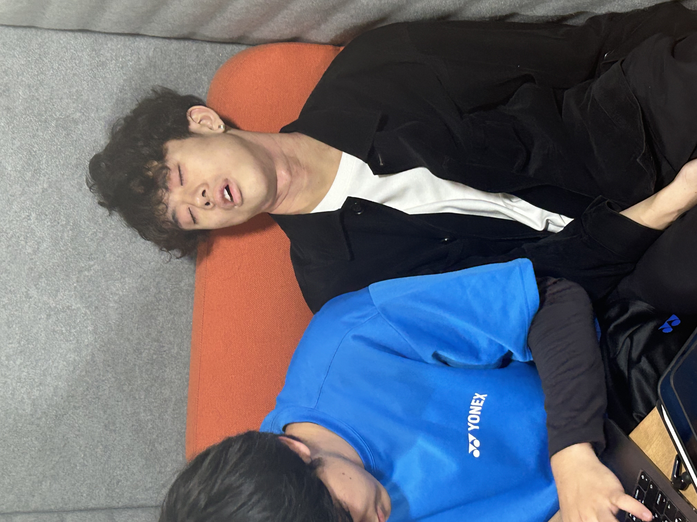

名古屋大学非公式wiki
~NU wiki unofficial~
初めに
お知らせ
部活動/サークル情報
各種まとめ
新入生必見！部活・サークル一覧！
このページは、多種多様な、100以上の部活動、サークルを一覧にし、
活動頻度、部費といった大まかな内容を記述しています。部活やサークルは大学生活をより一層豊かにするものです。
皆さんがこのサイトを活用し、バラ色のキャンパスライフを送るよう一同心から願っている。
~ 検索機能は以下から~
トリ横界隈
授業の空き時間や、ぶっちしたときに集う場所、服部ホール。
いつしかその輪はあまねく広がっていき、世界征服をもたくらむ者たちの集いともなっている。

この男Y.K.は、エナジードリンクという自身に宿りし魔物を呼び覚ますが、体への代償がすさまじい飲み物を
キャパを超えた挙句昼夜逆転してしまった哀れな者である。
芸音楽部
お前もギターを始めないか？おすすめの楽器屋紹介するよ。愛〇楽器っていうんだけどさ。
ボカロ同好会
j-popと並ぶジャンルへと変わりつつあるボーカロイド。お気に入りの曲を共有したり、適宜開催されるカラオケ交流会などでもりあがったり。
管理人の一番お気に入りの曲は、orangestarさんの"快晴"。良かったら
こちらから聴いてみてください。
お前もギターを始めないか？おすすめの楽器屋紹介するよ。愛〇楽器っていうんだけどさ。
トリ横界隈
授業の空き時間や、ぶっちしたときに集う場所、服部ホール。
いつしかその輪はあまねく広がっていき、世界征服をもたくらむ者たちの集いともなっている。
この男Y.K.は、エナジードリンクという自身に宿りし魔物を呼び覚ますが、体への代償がすさまじい飲み物を
キャパを超えた挙句昼夜逆転してしまった哀れな者である。
芸音楽部
お前もギターを始めないか？おすすめの楽器屋紹介するよ。愛〇楽器っていうんだけどさ。